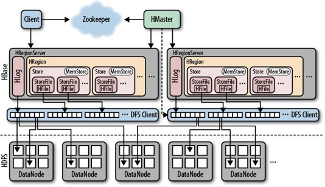
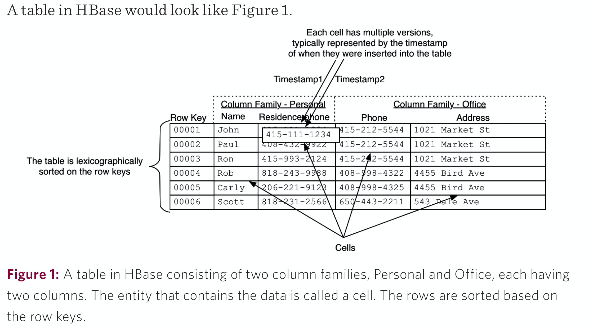
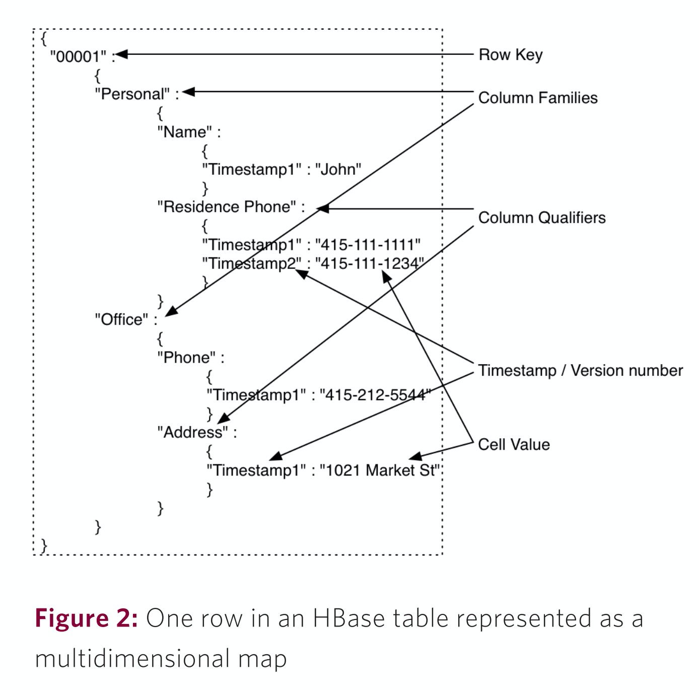
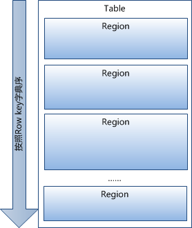
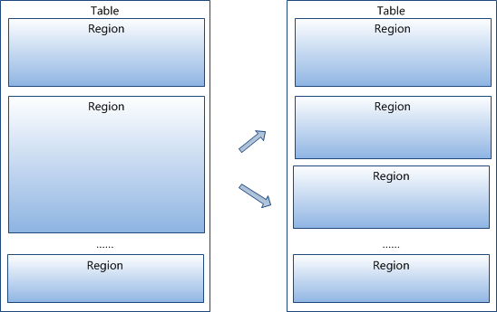
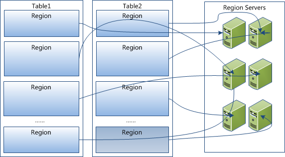
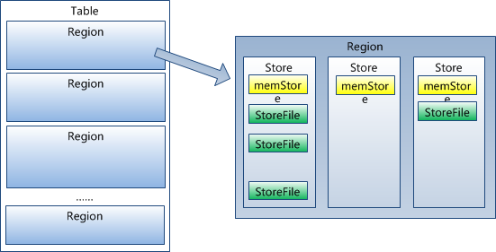
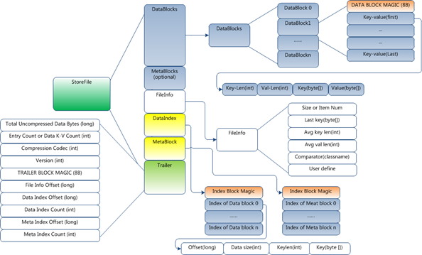

[TOC]
一、架构
1.1 概览
1、HBase架构中有若干个从节点HRegionServer，负责维护主节点HMaster分配给它的HRegion，响应客户端Client的I/O请求，向HDFS文件系统中读写数据，切分在运行过程中变得过大的HRegion。并发性能与HRegionServer的个数有关。
2、一个HRegionServer中有若干个HRegion，若干连续的行构成一个HRegion，当一个HRegion所有的storefile的大小超过阈值后，这个HRegion会分割为两个，并由HMaster分配到相应的HRegionServer服务器，实现负载均衡，所以一张完整的表可能被保存在多个HRegionServer上，HRegion是HBase中分布式存储和负载均衡的最小单元，但并不是存储的最小单元。
3、HBase中的每张表都通过RowKey按照一定的范围被分割成多个HRegion，默认一个HRegion超过256M就要被分割成两个，这个过程由HRegionServer管理，而HRegion的分配由HMaster管理。 一个HRegion中有若干个Store，每个Store是一个列族，Store分两种，新插入的数据在内存数据MemStore中，满了之后写到磁盘StoreFile中，数据以HFile的格式保存在hdfs的DataNode中，StoreFile中有Hfile的元数据，方便索引。客户端在检索数据时，先在MemStore找，找不到再找StoreFile。不断的写StoreFile生成HFile会产生很多小文件不利于性能，所以会合并小StoreFile形成更大的，过大的话再切分。
4、HLog是一种预写日志WAL log，即Write ahead log，对hbase操作之前会将指令先写入HLog，如MemStore中的数据还没写入StoreFile时停电了，就可以进行数据恢复。每个HRegionServer只有一个HLog，缺点是如果一台HRegionServer下线，为了恢复其上的HRegion，需要将HLog进行拆分，然后分发到其它HRegionServer上进行恢复。
5、HMaster管理用户的增删改查操作，管理HRegionServer的负载均衡，调整Region分布，在HRegionServer停机后，负责失效HRegionServer上的HRegion迁移。由于master只维护表和HRegion的元数据，而不参与表数据I/O的过程，HMaster下线仅导致所有元数据的修改被冻结(无法创建删除表，无法修改表的schema，无法进行HRegion的负载均衡，无法处理HRegion上下线，无法进行HRegion的合并，唯一例外的是HRegion的 split可以正常进行，因为只有HRegionServer参与)，表的数据读写还可以正常进行。因此HMaster下线短时间内对整个HBase集群没有影响。从上线过程可以看到，HMaster保存的 信息全是可以冗余信息(都可以从系统其它地方收集到或者计算出来)，因此，一般HBase集群中总是有一个HMaster在提供服务，还有一个以上的”HMaster”在等待时机抢占它的位置(StandBy状态)。
6、客户端client包含有各种接口，client维护着一些cache来加快对HBase的访问，比如HRegion的位置信息。读写操作时，客户端直接与HRegionServer通信，建表等管理操作则请求ZooKeeper与HMaster通信。
7、ZooKeeper是分布式应用程序协调服务，保存了表元数据寻址地址（-ROOT-表的地址）、HMaster和HRegionServer的状态信息。它的作用是保证集群中只有一个HMaster，实时监控HRegionServer的状态并通知给HMaster。
1.2 特点
- 面向列： Hbase是面向列的存储和权限控制，并支持独立索引。列式存储，其数据在表中是按照某列存储的，这样在查询时只需要少数几个字段，可以大大减少读取的数据量。
- 多版本： Hbase每一个列会存储多个Version。
- 稀疏性： 为空的列不占用存储空间，表可以设计的非常稀疏。
- 可扩展性： 因为底层依赖的是HDFS，HDFS本身就可以进行扩展。
- 高可靠性： WAL机制保证了数据写入时不会因为集群异常而导致写入数据丢失，Replication机制保证了在集群出现严重的问题时，数据不会发生丢失或损坏。而且Hbase底层使用HDFS，HDFS本身就会进行备份。
- 高性能： 底层的LSM数据结构和RowKey有序排列等架构上的独特设计，使得Hbase具有非常高的写入性能。region切分主键索引和缓存机制使得Hbase在海量数据下具备一定的随机读取性能，该性能针对RowKey的查询能达到毫秒级别。
- HBase依赖于Zookeeper： Hbase是依赖于Zookeeper的，HBase中有内置的Zookeeper，但一般我们会用其他的 Zookeeper 集群来监管 HMaster 和HRegionServer，Zookeeper 通过选举，保证任何时候，集群中只有一个活跃的 HMaster 。
二、表设计
2.1 基本概念
- Table(表)
- Hbase组织数据存储到表内。
- 大。一个表可以有上亿行，上百万列
- 面向列。面向列(族)的存储和权限控制，列(族)独立检索。
- 稀疏。对于为空(null)的列，并不占用存储空间，因此，表可以设计的非常稀疏。
- Row(行)
- 数据按行存储，并有一个
RowKey来标识。 RowKey可以是任意内容(最大长度是 64KB，实际应用中长度一般为 10-100bytes)，保存为字节数组。- 存储时，数据按照Row key的字典序(byte order)排序存储。
- 每条数据按照
RowKey切割到不同的HRegion里。
- 数据按行存储，并有一个
- ColumnFamily(列族)
- 数据被按照
列族的方式来组织 - 列族是表的chema的一部分(而列不是)，必须在使用表之前定义。列名都以列族作为前缀。例如courses:history，courses:math都属于courses 这个列族。
- hbase表中的每个列，都归属与某个列族。
- 访问控制、磁盘和内存的使用统计都是在列族层面进行的。实际应用中，列族上的控制权限能帮助我们管理不同类型的应用：我们允许一些应用可以添加新的基本数据、一些应用可以读取基本数据并创建继承的列族、一些应用则只允许浏览数据（甚至可能因为隐私的原因不能浏览所有数据）。
- 数据被按照
- ColumnQualifier(列)
- 一个
列相当于一个字段。 - 一个
列族内，可以有多个列。
- 一个
- Timestamp(时间戳)
- 每个cell里的数据，都有一个毫秒级时间戳对应，作为版本控制。
- 每个 cell中，不同版本的数据按照时间倒序排序，即最新的数据排在最前面。
- 时间戳也可以由客户显式赋值。如果应用程序要避免数据版本冲突，就必须自己生成具有唯一性的时间戳。
- 增删改，就是在数据上添加时间戳来标识。
- 为了避免数据存在过多版本造成的的管理 (包括存贮和索引)负担，hbase提供了两种数据版本回收方式。一是保存数据的最后n个版本，二是保存最近一段时间内的版本（比如最近七天）。用户可以针对每个列族进行设置。
- Cell(单元)
- 存储数据地方。
- 由{RowKey， ColumnFamily, ColumnQualifier， version} 唯一确定的单元
总体上，RowKey的设计是最重要的。那么在设计时，注意一下几点：
- 唯一原则。必须在设计上保证其唯一性，rowkey是按照字典顺序排序存储的，因此，设计rowkey的时候，要充分利用这个排序的特点，将经常读取的数据存储到一块，将最近可能会被访问的数据放到一块。
- 散列原则。如果rowkey按照时间戳的方式递增，不要将时间放在二进制码的前面，建议将rowkey的高位作为散列字段，由程序随机生成，低位放时间字段，这样将提高数据均衡分布在每个RegionServer，以实现负载均衡的几率。如果没有散列字段，首字段直接是时间信息，所有的数据都会集中在一个RegionServer上，这样在数据检索的时候负载会集中在个别的RegionServer上，造成热点问题，会降低查询效率。
- 长度原则。rowkey是一个二进制码流，可以是任意字符串，最大长度 64kb ，实际应用中一般为10-100bytes，以 byte[] 形式保存，一般设计成定长。建议越短越好，不要超过16个字节，原因如下：
- 数据的持久化文件HFile中是按照KeyValue存储的，如果rowkey过长，比如超过100字节，1000w行数据，光rowkey就要占用100*1000w=10亿个字节，将近1G数据，这样会极大影响HFile的存储效率；
- MemStore将缓存部分数据到内存，如果rowkey字段过长，内存的有效利用率就会降低，系统不能缓存更多的数据，这样会降低检索效率。
- 目前操作系统都是64位系统，内存8字节对齐，控制在16个字节，8字节的整数倍利用了操作系统的最佳特性。
2.2 存储示意
2.2.1 逻辑存储

2.2.2 物理存储
- 1.Table中的所有行都按照row key的字典序排列。Table 在行的方向上分割为多个Hregion。

- 2.region按大小分割的，每个表一开始只有一个region，随着数据不断插入表，region不断增大，当增大到一个阀值的时候，Hregion就会等分会两个新的Hregion。当table中的行不断增多，就会有越来越多的Hregion。

3.HRegion是Hbase中分布式存储和负载均衡的最小单元。最小单元就表示不同的Hregion可以分布在不同的HRegion server上。但一个Hregion是不会拆分到多个server上的。

4.HRegion虽然是分布式存储的最小单元，但并不是存储的最小单元。
事实上，HRegion由一个或者多个Store组成，每个store保存一个columns family。每个Strore又由一个memStore和0至多个StoreFile组成。如图：StoreFile以HFile格式保存在HDFS上。

5.HFile的格式
- HFile分为六个部分：
- Data Block 段–保存表中的数据，这部分可以被压缩
- Meta Block 段 (可选的)–保存用户自定义的kv对，可以被压缩。
- File Info 段–Hfile的元信息，不被压缩，用户也可以在这一部分添加自己的元信息。
- Data Block Index 段–Data Block的索引。每条索引的key是被索引的block的第一条记录的key。
- Meta Block Index段 (可选的)–Meta Block的索引。
- Trailer– 这一段是定长的。保存了每一段的偏移量，读取一个HFile时，会首先读取Trailer，Trailer保存了每个段的起始位置(段的Magic Number用来做安全check)，然后，DataBlock Index会被读取到内存中，这样，当检索某个key时，不需要扫描整个HFile，而只需从内存中找到key所在的block，通过一次磁盘io将整个 block读取到内存中，再找到需要的key。DataBlock Index采用LRU机制淘汰。
- HFile的Data Block，Meta Block通常采用压缩方式存储，压缩之后可以大大减少网络IO和磁盘IO，随之而来的开销当然是需要花费cpu进行压缩和解压缩。目标Hfile的压缩支持两种方式：Gzip，Lzo。
- HLog(WAL log)
- WAL 意为Write ahead log(http://en.wikipedia.org/wiki/Write-ahead_logging)，类似mysql中的binlog,用来 做灾难恢复只用，Hlog记录数据的所有变更,一旦数据修改，就可以从log中进行恢复。
- 每 个Region Server维护一个Hlog,而不是每个Region一个。这样不同region(来自不同table)的日志会混在一起，这样做的目的是不断追加单个 文件相对于同时写多个文件而言，可以减少磁盘寻址次数，因此可以提高对table的写性能。带来的麻烦是，如果一台region server下线，为了恢复其上的region，需要将region server上的log进行拆分，然后分发到其它region server上进行恢复。
- HLog 文件就是一个普通的Hadoop Sequence File，Sequence File 的Key是HLogKey对象，HLogKey中记录了写入数据的归属信息，除了table和region名字外，同时还包括 sequence number和timestamp，timestamp是”写入时间”，sequence number的起始值为0，或者是最近一次存入文件系统中sequence number。HLog Sequece File的Value是HBase的KeyValue对象，即对应HFile中的KeyValue，可参见上文描述。
- HFile分为六个部分：
三、常用命令操作
3.1 版本操作
1 | 查询状态 |
3.2表结构操作
1 | 创建表 |
3.3 数据操作
1 |
|
3.4 权限
1 | 对某用户授权。READ(‘R’), WRITE(‘W’), EXEC(‘X’), CREATE(‘C’), ADMIN(‘A’) |
四、Python操作
使用happybase库来操作。
1 | import happybase |